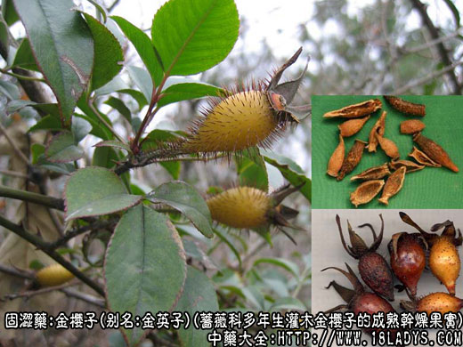
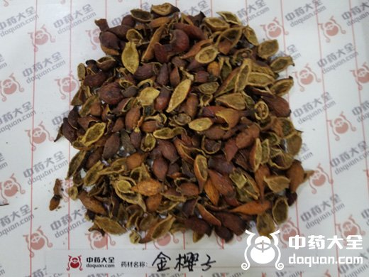
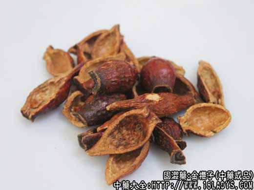

原文连接:https://www.daquan.com/post/2379.html

金樱子源植物图片

金樱子图片


金樱子为较常用中药，始载《蜀本草》。
别名：金英子。
来源：为蔷薇科多年生灌木金樱子的成熟干燥果实，野生。
产地：主产于中南，华东，西南等地区。
性状鉴别：呈倒卵形，略似花瓶，长3厘米左右，直径约2厘米。外皮橙色或棕红色，稍有光泽，上端宿存花萼如盘状，下端略尖，全体有刺毛脱落后的棕褐色突起小点。切开假果，果壁厚约1.5毫米，淡橙色，内壁附有多数黄色有光泽的毛茸，内含瘦果30～40粒。果壁气无，味微苦酸涩。
以个大色红有光泽，去净毛刺者为佳。
主要成分：含鞣质、苹果酸、柠檬酸、维生素C、皂甙等。
药理作用：涩精止泻，其作用为收敛、强壮。另有较强的抗菌和抗病毒作用。体外试验证明，本品为中药中抗菌作用较突出的几种药物之一，对葡萄球菌的抑菌作用最强，其次为变形杆菌，对伤寒杆菌、福氏痢疾杆菌有一定程度抑菌作用。又在1：3200的水溶液中对流感病毒仍有抑制作用。
此外，据最近报道，动物实验初步发现有降低血清胆固醇的作用。
炮制：挖去瘦果及毛茸生用。
性味：酸、涩、平。
归经：入肾、膀胱、大肠经。
功能：涩精，止泻，缩尿。
主治：遗精、遗尿、小便频数、白带、脾虚久泄等症。
临床应用：主要用于补虚而固涩，用途与芡实基本相同，且常同用。治肾虚遗精、尿频、夜尿、脾虚泄泻、白带，方如水陆二仙丹，或与其他补肾固涩药配伍，方如益肾方。
本品可治慢性痢疾，取其有收敛和抗菌作用，常配莲子、芡实、罂粟壳等。
此外，据报导有用100%金樱子浓煎液，内服治轻度子宫脱垂，有一定效果。
使用注意：多服久服会有便秘和轻度腹痛等反应。
用量：15～30g。
处方举例：
水陆二仙丹（《洪氏集验方》）：金樱子膏、芡实粉等各等分，酒糊为丸，每服6g，米汤或温开水送服。
益肾方：金樱子15g，益智仁9g，覆盆子12g，狗脊12g，熟地6g，龙骨30g，牡蛎15g，茯苓12g，水煎服。
附：金樱根：为金樱子的干燥根，性味、功用和用量与金樱子同，都有收敛固涩作用，可代金樱子用。两者的区别是：金樱子多用于敛精止泻，金樱根多用于妇科血证、月经过多，方如金樱艾叶汤：金樱根30g，艾叶（炒）30g，鸡血藤30g，益母草60g，水煎服。能加猪肉或鸡蛋同煎更好。
河北、山西等地区所产金樱子，原植物为山刺玫，系完整的假果。呈长卵形或球形长1.5～3厘米，直径约1.5厘米，表面橙红色或深红色，稍有光泽，无刺，全体有皱纹，内壁亦有黄色有光泽的毛茸，含小瘦果10～20粒。气微，味微甜酸。现外贸收购名“玫瑰果”运销国外作果酱湖或饮料用。